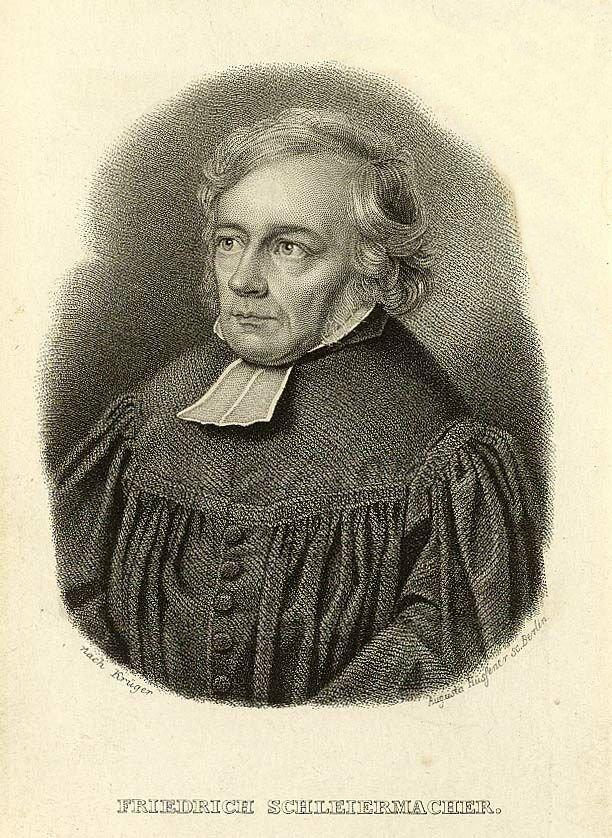

10) İnsansal Öğreti
“Havada bir ağırlık var. Hissediyor musunuz? Almanya’nın yakın zamanda düştüğü durumun içine giriyoruz… Dini bütün Alman köylüsü hâlâ toplu tapınmalara katılırken büyük şehirlerde fiili tanrıtanımazlık en yüksek derecelere ulaşmıştır. Bunun nedeni nedir? Buna neden olanlar papazlardır. İnsanlara Kutsal Yazılar’daki inancın dışındaki şeyleri vaaz ettiler; onlara şüpheci olmayı öğrettiler… Gerçeği tanımak ve iletmektense gerçek olamayacak sözcüklerle oynadılar. Bu kötülüğe bütün ruhumla karşı çıkıyorum.”
Charles Haddon Spurgeon
yüzyıldan 20. yüzyıla kadar olan süreç içerisinde “Hristiyan” batı dünyasında inancı yıpratan pek çok teolojik akım yayıldı. 20. yüzyılın ikinci yarısına kadar Batı Dünyası’nın önde gelen üniversitelerindeki teoloji fakültelerinde okutulan Hristiyan doktrini ya çok yüzeysel bir olguydu, ya da geleneksel Katolik veya Reform öğretisi ile herhangi bir ortak noktası yoktu.
A. Doğa Tanrıbilimi Temelleri Atılıyor
Doğa Tanrıbiliminin yükselişi (Tanrı’yla ilgili gerçeklere doğanın incelenmesiyle ulaşılabileceği görüşü) 17. yüzyıldan beri etkili olan pek çok faktöre bağlanabilir. Her şeyden önce, Mesih’ten önce yaşamış olanların imanıyla ilgili “dahili” teolojik problemi çözmeye yönelik ihtiyaç vardı. Eğer Tanrı bu kişileri yargılayacaksa, onların inandıkları bir çeşit doğal dinin olması gerektiği kabul ediliyordu.
Bu nedenle, Kutsal Yazılar’ı, en güncel bilimsel bilgilerle bağdaştırma ihtiyacı duyuldu. Bilim, çok ince, hünerli bir şekilde oluşturulan, Yaratıcı’sının gücünü ve hikmetini açıkça gösteren evreni bir şekilde ortaya koymuyor muydu? Şüphesiz bu “Doğa Kitabı”, yazılı esinin yaptığından daha çok şey anlatıyordu!
Bununla beraber, Tanrı’ya olan inançlarının akla uygunluğunu savunma ihtiyacı hisseden teologlar da vardı. Bir bölümü de, doğadaki tasarımdan elde edilen savın, bütün insanoğlu için anlaşılır olabileceği inancına dayanan evrensel bir din ortaya koymayı amaçlıyordu. Belirli temel dini ilkelerin oluşturulmasının insanları birleştireceğini umut ettiler. Muhtemelen bu son görüş, doğa tanrıbiliminin 17. yüzyılda ulaştığı konumun nedenini oluşturur. Oysa Reformasyon ve diğer dini tartışmalar yalnızca bir kanlı savaştan diğerine neden oluyor gibi görünmekteydi.
İncil’in bazı bölümleri, özellikle de Romalılar 1:18-21, görünürde, Tanrı bilgisine İncil olmadan da ulaşılabileceğini, bu bilginin insan aklı için kolaylıkla ulaşılabilecek bir şey olduğu anlatıyordu. Bu görüş, bağımsız bir doğa tanrıbiliminin oluşmasına neden oldu. Romalılar bölümü, Tanrı ile ilgili doğal bilginin bile, Tanrı tarafından insana bildirildiğini ima eder. Burada Tanrı ile ilgili her şeyin yazılı esinden bağımsız anlaşılamamasına rağmen, doğanın, yargı gününde kötülerin mazeretine bakmaksızın Kendisi ile ilgili yeterince şeyi açığa vurduğu anlamına çıkar. Başka bir deyişle, inkâr etmek için ne kadar çok çabalasalar da, putperestler, gnostikler, şüpheciler, ateistler, daha doğrusu bütün inanmayanlar, Tanrı ve O’nun temel nitelikleriyle ilgili yeterli derin bilgiye sahiptirler.
Augustinus, Anselm, Aquinas ve Calvin, doğa tanrıbilimi ile Kutsal Kitap’tan esinlenmiş tanrıbilimi arasındaki ilişkiyi farklı şekilde yorumladılar. Örneğin Aquinas, O’nun varlığı, nitelikleri, dünyayı yaratması gibi Tanrı ile ilgili kesin temel önermelerin, mantıklı iddia ile açıklanabileceğini, fakat İsa Mesih’in beden alması ve Üçlü Birlik gibi öğretilerin sadece esin aracılığıyla anlaşılabileceğini kabul etti. İnsan doğası ile ilgili daha kötümser bir bakış açısına sahip olan Calvin (tamamen bozulmuşluğa, yani insanın her yönüyle günah ile kirlendiğine inanıyordu) ise, bir kişinin mazeretsiz olarak Tanrı ile ilgili yeterli bilgiye esin olmadan da sahip olabileceğini, fakat bu bilginin yine de eksik olduğunu kabul etti.
17. yüzyılın sonuna doğru, doğanın incelenmesinin daha derin Tanrısal bilginin elde edilmesini sağlayacağına inanan teologların ve filozofların sayısı arttı. Bu durum, daha önceleri esini tamamlamak için yararlanılan doğa tanrıbiliminin, esinin desteklenmesi için kullanılmasına neden oldu. Başka bir deyişle, Calvin Kutsal Yazılar’ın, insanın Tanrı ve dini doğrular ile ilgili doğal anlayışını düzelttiğini öğretirken, yeni bir grup 17. yüzyıl Protestan alimleri Kutsal Yazılar’ın, sadece, aklın zaten ulaşabileceği dini doğrular üzerinde genişleyebileceğini öğretiyordu. Bununla beraber Doğa tanrıbilimi, Kutsal Yazılar’ı hem köprü kurma yöntemi, hem de Hristiyan inancının “akılcı” bir savunması olarak değerlendiriliyordu.
Bir bakış açısından diğerine geçilmesi yavaş yavaş gerçekleşse de, 17. yüzyılın sonuna kadar, esinlenmiş tanrıbilim ile doğa tanrıbilimi arasındaki dengede belirgin bir değişim vardı. İşleri Yeni Antlaşma’da açıklandığı Kurtarıcı Tanrı kavramının yerine, işlerinin evrenimizdeki harika tasarımında, O’nun doğa kitabında ortaya konulduğu Yaratıcı Tanrı kavramının ortaya çıkmasına neden oldu.
18. yüzyılda, doğa tanrıbilimi, onu esinlenmiş olan dinin gizemlerine karşılık akılcı bir alternatif olarak gören deistler tarafından savunulmaya başlandı. Hegel’in idealizmi, Paul Tillich’in varoluşsal ontolojisi ile beraber, doğa tanrıbiliminin biçimi olarak görülebilir. Kutsal Kitap’ın aşkın Tanrı kavramını, dünyadan bağımsız olduğu durumda var olamayacak Tanrı kavramıyla değiştirdiler. Doğa tanrıbiliminin çağdaş bir biçimi olan A. N. Whitehead’in süreç tanrıbilimi, Kutsal Kitap’ın aşkın Tanrı görüşünü, evrimsel süreç içerisinde önemsiz bir etken haline getirmekteydi.
B. Friedrich Daniel Ernst Schleiermacher (1768-1834): Mutlak Tanrıbilimi (Pozitif Tanrıbilimi)
Friedrich Schleiermacher, Protestan tanrıbilimi üzerindeki etkisi yadsınamayacak bir Alman din adamı ve düşünürüydü. Çoğu zaman çağdaş, liberal tanrıbilimin babası olarak nitelendirilir.
Schleiermacher’in babası bir Protestan rahibiydi, fakat oğlunun çok dindar bir okul olan Moravya Kardeşler ilahiyat fakültesinde okumasını sağladı. Kendisi orada Latin ve Grek klasikleriyle yakından ilgilendi; bununla beraber, fakültede güncel tanrıbilimsel ve entelektüel akımlarla ilgili ders verilmemesi nedeniyle oradan ayrılarak Halle Üniversitesi’ne gitti. 1794’te bir Protestan rahibi olarak atandı.
1799 senesinde yayınladığı ünlü kitabı On Religion: Speeches to Its Cultured Despisers (Din Üzerine: Onu Küçümseyen Kültürlü Kişiler İçin Söylevler) kendisinin kısa sürede Almanya’nın önde gelen entelektüellerinin arasına girmesini sağladı. 1810 senesinde Berlin Üniversitesi’nin kurulmasına katkıda bulundu. Sonraki birkaç onyıl süresince tanrıbilimi fakültesinde sözü geçen kişi oldu. Ayrıca Berlin’de bulunan ünlü Trinity (Üçlübirlik) Kilisesi’nde de rahiplik yaptı. Schleiermacher’in yazıları, 30 ciltten oluşan vaazları ve tanrıbilimsel ve felsefi eserleri içerir. Fakat en önemli eseri, The Christian Faith (Hristiyan İnancı) (1821-22; İng. çev. 1948) olmuştur. Bu yapıt, onun tanrıbiliminin en duru halidir.
Berlin’de bulunan Schleiermacher, Aydınlanma’nın akılcı görüşlerine karşı çıkan, bunun yerine duyguların rolünü, gizemi ve insan tecrübesindeki imgelemi vurgulayan bir grup Alman romantik düşünürün üyesiydi. Bu 19. yüzyıl Alman romantikleri, Johann Gottfried Herder (1744-1803) gibi, antik metinleri yorumlama çabalarına estetik ve şiirsel duyarlılığı da ekleyen alimlerin mirası üzerine temellenmiştir. Herder, metnin yazıldığı dönemin “ruhuna” veya Zeitgeist’ine karşı duyarlı, empatik bir imgelemi açıklamak için Almanca bir terim olan Einfühlung sözcüğünü ortaya koydu. Ki sonuçta anlam, anlatım yüzeyinin altında ortaya çıkarılıyordu. Belirli bir anlatımın anlamı, metinde gizli kalıyordu. Yazarın amacını ortaya çıkarmak için edebiyatçılar, dilin yapısının kendisinde, yazıldığı dönemdeki ekonomik yapıda ve yazarın bastırılmış psikolojik isteklerinde ve ahlaki veya ahlak dışı vurgularında gizli olan etkenleri araştırmaya başladılar. İncelemesi On Religion: Speeches to Its Cultured Despisers, (Din Üzerine: Onu Küçümseyen Kültürlü Kişiler İçin Söylevler)’de Schleiermacher Romantizmi çağdaş, bilimsel ve yazınsal inceleme ile harmanlamaya çalıştı.
Schleiermacher dönemine kadar, Protestan dini görüşü ikiye ayrılmış haldeydi. Tanrı bilgisini İncilsel esine bağlayan geleneksel akımı ve Tanrı ile ilgili bilgiye, doğadan çıkarılabilecek mantıklı sonuçlarla veya Tanrı fikrinin kendisi ile ulaşmayı amaçlayan doğa tanrıbilimi vardı. Thomas Aquinas gibi bazı kişiler bu iki akımı birleştirmeye çalışırken, Kant gibi diğerleri de, doğa tanrıbiliminin eksikliklerinin Kutsal Kitap’sal Hristiyanlığa da zarar verdiğini düşündükleri için, her ikisini de reddettiler.
Schleiermacher üçüncü bir yol geliştirmeye çalıştı. Kant’ın başarıyla çürüttüğü doğa tanrıbilimine çok önem vermedi, ama “kendi kendine yetme” alternatifini de hesaba katmadı. Tüm bunların yetersiz kaldığına inandı, çünkü: tapınma, ahlak ve öğreti unsurlarının olduğu donanımlı bir din meydana getirmiyordu. Fakat, Kutsal Kitap’ı, Tanrı’nın sözlerinin bir kaydı ve tarihteki aracılıklar olarak, nominal değeriyle de kabul edemezdi. Nihayetinde, metinleri anlama ilkeleri ve anlama eyleminin kendisi arasında keskin bir ayrım yaparak, çağdaş bir Kutsal Kitap yorumu (hermeneutik) oluşturmaya çalıştı. Schleiermacher’e göre Kutsal Kitap yorumu sadece “kurallara” ve geleneksel Kutsal Kitap yorumu ilkelerine (“metin kendi bağlamının dışında değerlendirilmemelidir” gibi) odaklı olmamalı; aynı zamanda “Bu metinler anlamlı bir bütünlüğe nasıl katkıda bulunuyor” ve “Bir metni anlamak ne demektir?” gibi soruları da sormalıydı.
Schleiermacher’in yaydığı görüş, Kutsal Yazılar’ın, yazarların dini deneyimlerinin toplamı olduğuydu. Dini tecrübeyi yorumsal bir araç olarak kullanıp bu deneyimin özünü Kutsal Kitap’tan ayırmayı ve Hristiyanlığı, modern insana da hitap edecek şekilde düzeltmeyi amaçladı. Kutsal Kitap yazarlarının dini deneyimlerindeki ortak paydanın, Tanrı’ya olan bağımlılık duygusu olduğu sonucuna vardı. Bu ise, dinin özünün mutlak bağımlılık olduğunu kabul eden “pozitif tanrıbilimine” inanmasına neden oldu. Bu, sınırlı bir varlık olarak kişinin, Sınırsız Olan’a, veya Tanrı’ya mutlak bağımlılık duygusudur. Dindarlık ifadeleri ne kadar farklı olursa olsun hepsinin ortak öğesi: tamamen bağımlı olmanın veya aynı şey olan, Tanrı ile ilişkide olmanın bilincidir (Schleiermacher 1956:12).
Schleiermacher daha sonra, Hristiyan öğretisini bütün yönleriyle yeniden yorumlamak için “mutlak bağımlılık” duygusu kavramını kullandı. Bu yolla geleneksel Hristiyan öğretisinin sözcük hazinesini ayakta tutarak tamamen yeni bir anlam da kazandırmış oldu. Günah, kişinin tamamen bağımlı olduğu, yani Tanrı ile bağımlılığının sadece göreceli olduğu, örneğin, dünyevi olan ayırım yapmadaki yetersizliğin sonucu haline geldi. Tanrı bilincine, mizacımız henüz içimizde aktif bir şekilde ortaya çıkmamışken, günahı bir zamanın gücü ve eylemi olarak biliriz” (1956:). Günah, bağımlı olması gerekirken, insanın özgür olmayı istemesidir. Kurtuluş bağımlılık duygumuzun onarılmasından ibarettir İsa, insanlar uğruna günahın cezasını çekmek için gelmemiştir; O sadece bağımlılık ilkesinin bir örneğidir: “Kurtarıcının etkinliği dünyayı düzenlemeye yöneliktir ve hedefi güçlü Tanrı bilincinin yeni bir ilke olarak bütünüyle aşılanması gereken insan doğasıdır” (1956:427).
Anlatmak istediği, Mesih’in tanrısal olduğu için değil, “insan doğasına sahip erdemli her insan gibi olup diğer insanlardan Tanrı’nın içindeki varlığı gibi bir şey olan Tanrı-bilincinin değişmez gücüne sahip olduğu için ayrılmasıyla” eşsiz olmasıydı (:112). İsa, Tanrı’ya çok yakın bağlılıkla yürüdüğü için, Tanrı’nın adeta Onda konut kurmuş olduğu söylenebilecek kişiydi.
Schleiermacher Eski Antlaşma’nın, Hristiyanlar için Yeni Antlaşma ile aynı biçimde normatif olmadığını öne sürdü. Çünkü Eski Antlaşma Yahudiliğin Kutsal Yazılar’ıydı. Fakat Hristiyanlık, Müjde’de anlatılan tamamen yeni bir inançtı. Eski Antlaşma olsa olsa alt yapı ile ilgili bilgi veren bir yorum görevini görebilirdi. Eski Antlaşma’nın, Yeni Antlaşma’ya ek olarak kullanılması ve diğer antik dini yazınlarla aynı açıdan değerlendirilmesi gerektiğini öne sürdü:
Bu nedenle, Eski Antlaşma’da kurallar hemen her şeyin bizim yararımıza olacağı biçimde oluşturulmuş olabilir, fakat aslında o bir dış kabuğu ve Yahudiliği en çok ilgilendiren tarafları en az değere sahiptir. Bunun için Eski Antlaşma bölümlerinde, yalnızca genel bir doğaya sahip olup özellikle Hristiyanlıkla ilgisi olmayan dini duygularımıza dair bir miktar doğruluk bulabiliriz. …durum böyle olunca, hemen hemen, basit ve saf putperest yapıtlardaki ifadelerin tekrarlarıyla karşılacağımız kesindir (1956: 62).
Schleiermacher ayrıca “Tarihsel İsa’yı arayışın” öncülerinden de biridir. İsa’nın doğumu ile ilgili Kutsal Kitap kaydının, tarihsel olduğunu düşünmedi. Çarmıha geriliş hikayesinin de gerçeğe uygunluğunu araştırdı. Sonra göreceğimiz gibi, David Friedrich Strauss ve Albert Schweitzer gibi radikal eleştirmenler, bu düşünce akımını daha da ileri götüreceklerdi.
Schleiermacher’ın çok ilginç yanlarından biri de, Kutsal Kitap’ı güncel ve açık bir şekilde vaaz etmesiydi. Ayet ayet anlamını ve uygulanmasını inceleyip inancın temel noktası olarak Mesih göstermeyi amaçlayarak kendisinden önce gelen önemli, reformcular kadar çok çalışmasıdır. Kürsü önünde öğretisi sağlam görünmesine rağmen, “pozitif tanrıbilimi”, Protestan Hristiyan öğretisine ciddi biçimde zarar vermiştir.
C. Kutsal Kitap Eleştirisi (Hermeneutik = yorum, açıklama)
“Kutsal Kitap Eleştirisi” terimi, Kutsal Kitap metninin orijinal ifade tarzını, yazarlığını, tarihlerini, komposizyon türlerini saptamak için kullanılan pek çok farklı yöntemi tanımlar. Örneğin, İncil’in kopyalanması ve çoğaltılması sırasında yüzyıllar boyunca meydana gelebilecek hataları ayıklayan metinsel eleştiridir. Bunun dışında, gelenek ve biçim eleştirisi ile Kutsal Kitap yazarlarının, görgü tanığı olmadıkları malzemeleri nasıl elde ettiklerini araştırır. Yazım eleştirisi, Kutsal Kitap yazarlarının ulaşabildikleri kaynakları nasıl kullandıklarını incelediği için daha uzun süre gerektirir. Kanon eleştirisi ise İncil kitapçıklarının her birini, Kutsal Kitapsal (kanonik) bağlam içerisinde yorumlamayı amaçlar. Fakat yazınsal yapıyla, yazılış tarihi ve yazarlıkla ilgilenen, 19. yüzyılın ikinci yarısı ve 20. yüzyılın ilk yarısı boyunca Kutsal Kitap’a karşı halkın güvenini önemli ölçüde sarsan, “yüksek eleştiri” olarak da adlandırılan yazınsal ve tarihsel eleştiridir.
16. yüzyılda ise Refomcular, kabul edilen Kutsal Kitap’taki, yani kanonik metindeki anlamı ortaya çıkarmayı amaçladılar. Varsayımsal öncel belgelerde veya yaşamdaki farklı durumların yeniden düzenlenmesinde anlam arama çabalarını reddettiler. Kutsal Kitap yorumları, ilk patristik dönemdekilerle (yani ilk kilise babalarının dönemi) çok ortak özelliğe sahipti. Örneğin, metnin tarihsel anlamının, yazınsal, dilbilgisel anlamında yattığını ve asıl amacının, imanlı topluluğa Tanrı tarafından esinlenmiş bir bildiri sunmak olduğunu kabul ettiler. Metnin diğer bölümlerden bağımsız olarak ele alınan birimleri, çevresindeki metinden veya içinde bulunduğu Kutsal Kitap bölümlerinden farklı, kendine özgü bir uygulamaya sahip olarak değil, bütün Kutsal Kitap’ın kapsamı ve amacı doğrultusunda yorumlanıyordu. Ayrıca, bu yorum, akademik bir çalışmanın sınırlarında, ilmi bir bağlamda değil, kilise çerçevesinde yer almalıydı (Kim 1998:127-128).
Reformasyon süresince, Protestanlar ve Roma Katolikleri arasında, Kutsal Kitap’ın tanrısal esini konusunda neredeyse hiçbir anlaşmazlık olmamıştır. Dönemin pek çok tanrıbilimcisi, peygamberlerin ve elçilerin kendi sözcükleriyle ve kendi tarihsel bağlamları içerisinde konuştuklarını, bununla beraber sözcüklerinin anlamlarının Kutsal Ruh tarafından yönlendirildiğini kabul ettiler. Kutsal Yazılar’ın anlamı iman ile, imanlılar topluluğu aracılığıyla farkına varılabilirdi. Çünkü Mesih, Tanrı Ruh’unun, kendi halkını, gerçeği anlamaları için yönlendireceğini vaat etmişti. “Gerçeğin Ruhu… sizi tüm gerçeğe yöneltecek… benim olandan alıp size bildirecek” (İncil: Yuhanna 16:13,15). Bununla beraber, Protestanlar, sadece orijinal dillerdeki metnin yetkisinin tamamen güvenilir olduğu konusunda ısrar ettiler (1998:128). Bu durum, reform-sonrası dönemde, yorum bilimsel (hermeneutik), felsefi ve metin-eleştirisel yapıtların ortaya çıkmasına neden oldu. Örneğin Calvin’den sonra gelen Theodore Beza en iyi Yeni Antlaşma kodekslerini karşılaştırdı, bunların arasından Codex Bezae (Cantabrigiensis) ve Codex Claromontanus, Yeni Antlaşma’nın metinsel analizinin çalışılmasında önemli bir yere sahiptir. Bu dönemde Kutsal Kitap’sal dillerde veya soydaş dillerde çalışmalar yapıldı ve önemli poliglot (birçok dili kapsayan) Kutsal Kitap’lar yayınlandı. Örneğin Londra Poliglotu (1669’da tamamlanmıştır) Arap Pentatükleri (Kutsal Kitap’ın ilk 5 kitabını kapsar), İbranice bir Eski Antlaşma, düzeltilmiş bir Vulgata, Eski Latince’den parçalar, Codex Alexandrinus’tan çeşitli bölümlerle Septuagint, Peshitto, Targumlar, Farsça bir Pentatük ve Müjdeler, Mezmurların eski bir Etiyopyalı versiyonu, Ezgiler Ezgisi ve Yeni Antlaşma’dan oluşuyordu. Bunların hepsinin beraberinde bağımsız bir Latin çevirisi de vardı (:137).
Fakat bu döneminde bile 19 ve 20. yüzyılların tarihsel-eleştirisel tekniğinin habercisi olan etkenler vardı. Louis Cappel (1585-1658) Kutsal Kitap’sal metninde açıkça insansal öğeler olduğunu öne sürdü. Hugo Grotius (1583-1645) Yeşaya’daki “kul” sözcüklerini, İsa Mesih’e değil, Yeremya ile ilgili peygamberliksel göndermeler olarak tanımlamaya çalıştı–böylece Eski ve Yeni Antlaşma esininin birliğine zarar veriyordu. Ayrıca, müjdeler arasında Matta’ya öncelik verilmesi gerektiğini de iddia etti. Richard Simon’un Kutsal Kitap metninin orijinal biçimini saptama çabalarında yazınsal ve tarihsel analizler kullanması, Markos’un son bölümünün orijinal olmadığı iddiasını ileri sürmesine neden oldu.
18. yüzyılda pek çok eleştirmen Kutsal Yazılar’ı, herhangi bir antik belgeyle aynı şekilde analiz etmeye başladılar. Bu, eleştirel bir şekilde incelenen ve “bilimsel” sınırlar içerisinde yeniden düzenlenen gerçek Kutsal Kitap’sal metnin yeniden değerlendirilmesine neden oldu. Araştırmacılar eldeki metnin daha eski yazılı kaynaklarını aramaya başladılar ve ilk metni –teorik açıdan daha güvenilir olanı– sonraki “gerçek olmayan ilavelerden”, “açıklamalardan”, “ikincil eklentilerden” ve eksikliklerden veya antik editörler ve kopyalayanların kaynaklarda düpedüz yaptıkları değiştirmelerden ayırmayı amaçladılar. Kutsal Kitap, antik tarihin insan eliyle oluşturulmuş bozulmuş bir kaydı, aşırı derecede uzmanlık gerektiren bir vazifenin yeniden düzenlenmesi olarak görülmeye başlandı.
“Kaynak metinler” olarak ileri sürülen bu hayali ürünler İncil ile aynı seviyede tutulmaya başlandı. Dahası, metni analiz etmek için yeni bilimsel, ekonomik, psikolojik ve sosyal faktörlerden yararlanan yazınsal olmayan bir hermeneutik (yorum), Hristiyan öğretisini açıklayan veya İncil’sel peygamberliği savunan klasik, yazınsal yorumlardan daha farklı sonuçların ortaya çıkmasına neden oldu.
Schleiermacher, bütün bunların neden olacağı şeyleri tahmin etmiş olmalı ki, Kutsal Kitap’sal metin ile ilgili özel bir hermeneutik olması gerektiğini öne sürdü (Schleiermacher 1956:83-87). Fakat Kutsal Kitap’sal yorumlama için doğru uzmanlaşmış ilkeleri geliştirmekte başarısız oldu. Onun Kutsal Yazılar’a duyduğu saygı, modern hermeneutiğin değindiği pek çok konuyu gözardı etmesini sağladı. Bu durum onun tam anlamıyla çağdaş bir rasyonalist olmasını engelledi. Diğer alimler ise onun “özel hermeneutik” görüşünü gözardı ettiler. Bunun yerine Kutsal Yazılar’ın tanrısal esinin öğretisi olup olmadığı ve akla uygunluğu ile ilgili sorular ileri sürüldü. Bu sorular, belirli Kutsal Kitap’sal bölümler ve hikayeler de dahil olmak üzere (özellikle Yaratılış ve Nuh tufanı), tarihle bilim arasında üstesinden gelinemez çelişkiler olduğunu öngören, alimler arasındaki anlayışa dayanıyordu. İnsan ile ilgili meselelere egemen olarak müdahale eden, mucizelerle çalışan geleneksel Hristiyan öğretisi, geçmişte meydana gelen olayların mucizeler olmadan akılcı açıklamalarının önünü kesmiş oldu.
Gotthold Ephraim Lessing (1729-1781), İbranice ve doğu dinlerinin profesörü olan ve tarihsel eleştiriyi kullanarak, Kutsal Kitap yazarlarının “tarihsel detaylar uyduran sahtekârlar” olduklarını kanıtlamaya çalışan Hermann Samuel Reimarus (1694-1768)’un bir eserinin yeniden düzenlenmiş versiyonunu yayınladı (1956:266). Johann Semler (1725-91), Johann Eichhorn (1752-1827) ve Johannes Gabler (1753-1826) gibi diğer alimler, Kutsal Kitap’sal metni değerlendirirken yazınsal ve tarihsel eleştirinin kullanılmasını desteklemeye devam ettiler.
Kutsal Kitap Eleştirisi alanındaki en önemli öncülerden biri ise, Tübingen Üniversitesi’nden, Almanyalı F. C. Baur (1792-1860)’dur. İlk kilise tarihinde, Petrus’un önderlik ettiği Yahudi Hristiyanlar’la, Pavlus’un önderlik ettiği, Helenizm’in etkisinde kalmış bir grup arasındaki çatışmanın göze çarptığını öne sürdü. Petrus’un grubu, sünnet edilme ve yasanın diğer uygulamalarına-adetlerine sıkıca bağlıyken, Pavlus’un grubu bütün bunları reddediyormuş. Bu durum ilk kilisede gerilime neden olmuş. Baur, Yeni Antlaşma kitaplarını değerlendirirken, sadece bu kargaşaya değinen kitapları kabul etmişti. Pavlus’un bütün mektuplarının arasından, yalnızca dördünü; Romalılar, Galatyalılar ve 1. ve 2. Korintlileri kabul ediyordu (Hodgon: 205).
Eduard Reuss (1804-1891), Abraham Kuenen (1828-1891), Karl Heinrich Graf (1815-1869) ve Julius Wellhausen (1844-1918) gibi bilginler Pentatük’ün, Musa’nın beş kitabının tarihsel sırasını, yararlanılan farklı “kaynaklara” göre yeniden düzenlediler. Bu, JEDP kuramı olarak bilinir. Bu, etkili bir İncilsel eleştiriye örnek olarak bizlerin de işine yarayacaktır.
Graf ve Wellhausen, Pentatük için dört kaynak belgesi saptadılar. “J”, Yahveci veya Yehovacı belge (yaklaşık dört yazarın –J1,J2, J3 V3 J4- eseriydi) 850 ve M.Ö. 650 yılları arasında oluşturulmuştu. M.Ö 750 yılı civarında ikinci bir yazar, bu kez İsrail’de yazarak Elohimci terimine tekamül eden “E” adını almıştır. Onun yapıtı yaklaşık M.Ö. 650 yılında Efrayimli (E2) bir kişi tarafından düzeltilmiştir. Bu iki kitap “J” ve “E”, JE’yi oluşturması için bir araya getirilmiştir. Bunun ardından ise yazar “D” gelir. Yaklaşık 621 senesinde Yasanın Tekrarı’nı veya bunun bir kısmını yazmıştır. Bazı alimler Yasa’nın Tekrarı’na Dh, ve Dp’nin, muhtemelen Yoşiya, Manaşşe, Hizkiya ve Azarya’nın saltanatları kadar eski olan bazı bölümleri eklediklerini öne sürmüşlerdir (bunun doğru olması mümkün değildir çünkü Kral Yoşiya’nın tapınağın onarılması sırasında bulduğu kitabın eksi olduğu açıktır. Bkz 2. Krallar 22:1-13). Babil sürgünü sırasında JE ve D, JED’yi oluşturmak için bir araya getirilmiştir. Dördüncü belgesel, “P”, kahinlikle ilgili yazılardan oluşur. Kurban sistemine ilişkin bütün kayıtlar bu kaynakta toplanmıştır. Birkaç yazar, P1, P2 vb bunun kompozisyonu içerisinde yer alır. Sürgün sırasında yazılmıştır. Pek çok ilave ile beraber (Yaratılış 1-10 gibi), JEDP’yi oluşturmak için, yaklaşık M.Ö 400 yılında JED, yani Pentatük ile birleştirilmiştir.
JEDP teorisinin, Pentatük’ün temelini oluşturan kaynakların yeniden yapılmış bir düzenleme görevi görmesi gibi, diğer alimler de Yeni Antlaşma üzerinde eleştirisel çalışmalara başladılar. J. J. Griesbach (1745-1812), Luka’nın kaynak olarak Matta’yı kullandığını öne sürdü. Karl Lachman (1793-1851), Christian Gottlob Wilke (1786-1854) ve Christian Hermann Weisse (1801-1866) hem Matta, hem de Luka’nın Markos’a bağlı olduğunu kabul ettiler. H. J. Holtzmann (1832-1910), sinoptik müjde yazarlarının (yani Matta, Markos ve Luka) kullandıkları, temeli oluşturan ve bu kitapların arasındaki benzerlikleri açıklayan bir belge olması gerektiğini öne sürdü. Holtzmann bu varsayımsal belgeye, Almanca “Quelle”, yani “Kaynak” anlamına gelen “Q” ismini verdi.
Kutsal Kitap’ın orijinal metnini yeniden düzenleme çabaları ile beraber, İsa’nın yaşamı da tarihsel-eleştirisel sınırlar dahilinde yeniden inceleniyordu. 1835’de Tübingen Üniversitesi’nden başka bir Alman teoloji profesörü, David Friedrich Strauss (1808-1874), Life of Jesus Critically Examined (İsa’nın Yaşamına Eleştirel Bir Bakış Açısı) adlı yapıtını yayınladı. H. S. Reimarus gibi öncellerinden ilham alan Strauss, Müjdelerin 2. yüzyıl mitolojik yazılı eserler olduğunu göstermeye çalıştı. Kitabı, hem Almanya, hem de İngiltere’de bir protesto fırtınası yarattı.
Strauss’un İsa’nın yaşamını eleştirel bir şekilde incelemesi, mucizevi ve doğaüstü olmayan ön varsayımlara yaptığı tutarlı bir başvuru şeklindeydi. Tanrısal mucizelere inanmadığı için, Strauss’a göre müjdelerdeki hikayeler sadece Eski Antlaşma’daki Mesih’le ilgili beklentilere yoğunlaşan ve beklentilerini İsa’ya yükleyen İsa’nın izleyicilerinin mitsel olaylar gerçekleştirme kabiliyetlerini yansıtıyordu. Kitabı, “Tarihsel İsa’yı Arayış” akımını daha da hareketlendirdi (Baird 1992:246-258).
Fransız doğubilimci J. E. Renan (1823-1892) ise İncil’de İsa’nın yaşamını anlatan bölümlerde geçen doğa üstü olayların doğru olamayacağına inanıyordu. İsa’yı, insanların kalbini kazanan, sevgiyi vaaz eden bir keşiş ve şehitlik anlayışından hoşlanan bir kişi olarak resmetti. Alman kilise tarihçisi Adolph von Harnack (1851-1930), Müjdeler’deki İsa’nın aslında ilk kilisenin yansımalarının, özellikle de gerçek yaşamında İsa’yı hiç görmemiş olan elçi Pavlus’un düşüncelerinin sonucu olduğu görüşünü destekledi. İsa’nın Müjdesi, yüreğinde ve zihninde huzuru bulmuş bir kişiye aittir. İsa, kendisinin Tanrı’nın Oğlu ve insanlığın Kurtarıcısı olduğu ile ilgili sırları duyurmayı veya ilan etmeyi amaçlamamıştı. Bunun yerine Tanrı’nın babalığını, insan ruhunun sonsuz değerini ve sevgi ile doğruluğun gerekliliğini öğretti. Başka bir deyişle, Harnack, Hristiyanlığın doğaüstü yönünü değil, ahlaki unsurlarını vurguladı.
“Tarihsel İsa’yı Arayış” ile her zaman bağdaştırılan başka bir isim de, sonunda Afrika’da müjdeci olarak doktorluk yapan Albert Schweitzer (1875-1965) olmuştur. Öncellerinden farklı olarak, Schweitzer, İsa’nın yaşamını, mucizevi olanı çürüterek temelinde yeniden düzenlemeye çalışmadı. Gerçekte, “Tarihsel İsa’yı Arayış” başlığını öven teolojik doktora tezi (Schweitzer felsefe, tanrıbilimi, müzikoloji ve tıp alanında doktoraya hak kazanmıştı), Reimarus’dan o döneme kadarki İsa’nın bütün liberal “tarihsel” düzenlemelerinin bir eleştirisiydi. Bunun yerine Schweitzer İsa’yı, dünyanın sonunun herhangi bir zamanda gelmesini bekleyen kişi olarak tanıttı. Aynı zamanda Tanrı’nın Egemenliği’nin gelmesini İsa’nın ve öğrencilerin dindarlığının bir sonucu olarak gösterdi.
Dünyanın sonu ve Tanrı’nın Egemenliğinin gelmesi ile bağdaştırılan yakında olması beklenen sıkıntı dönemleriyle birlikte, Schweitzer’in İsa’sı, Tanrı’nın Mesihsel Oğlu olarak açıklanabilmek için, ölmeyi ve yeniden dirilmeyi bekliyordu. Bu nedenle İsa, doğruluk, iman ve sevginin “geçici etiğini” öğretmişti, bütün bunlar, içinde yaşanılan zor zamanlardan ötürü, mal varlığından vazgeçilmesini, zulümlere dayanmayı, ve diğer yanağı çevirmeyi gerektiriyordu. Son gelmediğinde, İsa bunu çabuklaştırmak için Yeruşalim’e gitti ve kısa zaman içerisinde çarmıha gerildi. Daha sonra elçi Pavlus, İsa’nın aslında görünmez bir Mesihsel saltanatın yolunu gösterdiğini düşündü (Schweitzer 1950, 1985).
Rudolph Bultmann (1884-1976), Yeni Antlaşma’yı mitolojik yapan şeyin yalnızca bakireden doğum ve İsa’nın yeniden dirilmesi ve yükselmesi gibi mucizevi olaylar olmadığını, Yeni Antlaşma’nın “mitsel” olduğunu ileri sürdü. Görünmeyen güçlerin ikamet ettiği üç katmandan oluşan evren kavramını (yani, gökler, dünya ve cehennem) reddetti. Bununla beraber bir kefarete ihtiyacı olan insanların, tanrısal olanın dünyaya doğaüstü bir şekilde gelmesinden etkilenmeleri de agnostik/Yahudi bir mitden başka bir şey değildi. Bultmann, çağdaş insanın bu fikirleri artık kabul edemeyeceğini öne sürdü; bu nedenle Hristiyanlığın “mitolojik unsurlardan arındırılması” gerekirdi. Bunun üstesinden gelindiğinde, günaha düşüşün Adem’le ilgisinin olmadığı açıkça belli olacaktır. Kefaret, Mesih’in çarmıhta gerçekleştirdiği tarihsel bir olay değil, “aracılığıyla insanoğlunun bağlılık, sevgi ve iman ile gerçek yaşantısında yeterli olan, Tanrı’nın eylemiydi” (Bultmann :33).
Paul Tillich (1886-1965) de ilk kilisenin inançlarıyla tarihteki İsa’nın anlaşılamayacağını öne sürdü ve insanların, inanıldığı gibi kabul ettiği, varoluşsal bir çeşit Hristiyanlığı önerdi. Hristiyan inancı sadece belirli semboller ortaya koyar, aracılığıyla “yeni yaratık” olduğumuz İsa da bu sembollerden biridir.
Aforoz edilmelerin ve mahkemelerin artması, Kutsal Kitap’ın daha derin eleştirilmesi konusunu, seçkin akademi çevrelerinden, sıradan kilise üyelerinin ilgi alanına taşıdı. Episkopos J. W. Colenson, The Pentateuch and the Book of Joshua Critically Examined’in (Pentatük ve Yeşu Kitabının Eleştirel İncelemesi) yazarı, İngiltere Kilisesi tarafından 1866’da aforoz edildi. Ama o Güney Afrika Natal’da episkopos olarak iş bulabildi. Pentatük’ün farklı kaynaklardan alındığını anlatmakla kalmadı, bununla beraber tarihsel olaylara tam olarak uygun düşmediğini de öne sürdü. William Robertson (1846-1894), geleneksel olmayan kendi öğretisini yansıtan Britannica Ansiklopedisi’nin 9. basımına Eski Antlaşma ile ilgili makaleler yazdığı için, 1881’de Aberdeen Üniversitesi’ndeki kürsüsünden alındı. Daha sonra kendisi Cambridge Üniversitesi’ne geçmeye karar verdi. Ama Amerika’da C. A. Briggs (1841-1913) Eski Antlaşma’ya eleştirel bir şekilde yaklaştığı için 1893’de Prespiteryen Kilisesi’nden uzaklaştırıldı. Bulunduğu fakülte, yani Union Theological Seminary of New York (New York Birleşik İlahiyat Fakültesi), mezhepler arası bir okul olabilmek için, kendisini fakültede tutmaya devam etti (Gundry & Johnson :27).
Harry Emerson Fosdick (1878-1969) gibi bazı popüler yazarlar da liberal tanrıbiliminin yaygınlaşmasına katkıda bulundular. Kitabı, The Modern Use of the Bible (1924) (Kutsal Kitap’ın Çağdaş Kullanımı), tanrısal olarak esinlenmiş olmasına karşı, Kutsal Kitap’a dini deneyimin esinlendiren kaynağı olarak klasik bir yaklaşımdır ve bu şekilde dogmatik içeriğin temelini oluşturur.
D. Radikal Hristiyanlık
1960’lar, Britanya ve Kuzey Amerika’da “kökten dinci bir Hristiyanlığın” gelişimine şahit oldu. Geleneksel Hristiyanlıktan bir memnuniyetsizliği ifade ediyordu ve 20. yüzyılın taleplerini karşılamak için bunu düzeltmeyi amaçlıyordu. Radikal Hristiyanlık, Hristiyanlığın ana hatlarının gündelik hayattan uzak olmasına ve Hristiyanlığın getirdiği bütün “Victoria dönemine ait” süslemelere karşı çıktı. Kilisenin pek çok insan üzerinde etki yapmaktaki yetersizliği, bazı tanrıbilimcilerinin, müjdenin özünün ve hatta Tanrı ile ilgili düşüncelerimizin değiştirilmeye veya düzeltilmeye ihtiyacı olup olmadığı sorusunu sormalarına neden oldu. Bu hareketin simgesi olan en gizemli kişilerden biri ise, yaşamının son iki yılını Hitler’in ölüm kamplarında geçiren Dietrich Bonhoeffer (1906-1945)dir. Bonhoeffer “bedelsiz bir lütfun” olmadığı, seçmeci bir müjdeyi vaaz etti. Böylelikle, Hristiyanlar’ın tanrısız bir dünyada İsa’nın acılarına ortak olmak için çağrıldığını vurguluyordu.
Kuzey Amerikalı tanrıbilimcileri, 20. yüzyılın başlangıcına kadar, çoğunlukla İncil’in öğretisine sadık kalıp Kutsal Yazılar’ın, Üçlü Birliğin, Mesih biliminin, soteriyoloji (kurtuluş bilimi) ve eskatolojinin (son zamanlar öğretisi) yetkisi ve esin ile ilgili geleneksel reform öğretilerini savundular. Bunun nedenlerinden biri, o döneme kadar ilahiyat fakültelerinin büyük ölçüde mezhepsel olması ve bu nedenle kilisenin ve papazların hizmetine girmesiydı. 20. yüzyılın başında Almanya’daki tanrıbilimsel rüzgarlar Atlantiği geçerek, özellikle Amerikan’ın doğuda kıyıya yakın okulları etkiledi. Kuzey Amerikalı İncil alimlerinin pek çoğu, Tübingen, Göttingen, Leipzig, Strassbourg, Heidelberg, Marburg ve Berlin’deki rehberlerden öğrenebilmek için Almanya’ya gittiler. 1. Dünya Savaşı’na kadar, sayıları gittikçe artan, tanınmış Kuzey Amerikalı İncil alimleri esin ve Kutsal Yazılar’ın yanılmazlığı ile ilgili öğretileri reddettiler. Yazınsal ve tarihsel etkenlerin, İncil’sel yazın gerekliliğinin yeniden oluşturulması olduğu savını kabul ettiler. Dünya Savaşları’nın bir yan etkisi ise, Amerikan bilginlerinin Almanya’ya gitmekten vazgeçmesiydı.
1945’ten bu yana, Kuzey Amerika Kutsal Kitap araştırmaları çok büyük yol kat etmiştir. Uzmanların kuzey Amerika fakültelerine ve kolejlerine gitmeleri okulların hızlı bir şekilde büyümelerine neden oldu. Bu nedenle Avrupa’dan öğretmen alınmaya başlandı. Bütün bunların sonucunda ortaya çıkan bilgi birikimi, 1970’lerin sonunda ve 1980’lerde Amerika’nın akademik üstünlüğü için zemin hazırlamış oldu. İlginçtir ki, en hızlı büyüyen fakülteler, Fuller İlahiyat Fakültesi, Dallas İlahiyat Fakültesi, Trinity Evangelical Divinity School ve Gordon Conwell İlahiyat Fakültesi gibi, İncilci ve müjdeci olanlarıydı.
Amerikan fakültelerinin sayısının hızla artması, uzmanlaşmayı getirdi. Bultmann’ın ve diğer Alman liberallerinin eserlerinin, 1950 ve 1960’larda İngilizce’ye çevrilmesiyle beraber, Kuzey Amerika cephesinde liberal tanrıbilimi canlandı.
Bilimin diğer dalları gibi, teolojinin de geliştiğine dikkat edilmedir; 1970’lere kadar pek çok İncil eleştirmeni, görevlerini kilisenin değil, Kutsal Kitap ile ilgili uluslararası bilimin yararına gördüler. Anglo-Saxon dünyasındaki ve Afrika ve Asya’daki en iyi ve en yetenekli uluslararası Kutsal Kitap uzmanları artık Kuzey Amerika’ya yönelmişlerdi. Feminist hermeneutiği, yazınsal ve söz sanatsal analiz, yazınsal ve ideolojik eleştiri, imgesel yeniden oluşumlar, yeni bir “Tarihsel İsa’yı Arayış” giderek daha da yaygın hale gelmişti. Paul van Buren gibi tanrıbilimcilerin dilbilimsel çözümlemeleri ve Thomas J. J. Altizer’in anlaşılmaz görüşleri, “Tanrı ölüdür ve İsa onun oğludur” akımına kapı açtı. Müjdelerin tarihsel olarak doğru olmadığı varsayımından yola çıkarak, 1985’de Westar Enstitüsü’nden Robert W. Funk tarafından kurulan İsa İlahiyat Fakültesi’nin 40 bilim adamı, İsa’nın sözlerinin hangilerinin gerçek, hangilerinin gerçek olmadığına, renkli misketlerle oy vererek karar verdiler: kırmızı “bu İsa”, pembe “İsa gibi görünüyor”, gri “belki” ve siyah “hatalı” anlamına geliyordu. 1993’te bulgularını, The Five Gospels: The Search for the Authentic Words of Jesus (Beş Müjde: İsa’nın Gerçek Sözleri Araştırması) başlığıyla yayınladılar. “Araştırmalarının” ikinci safhası 1996 senesinde The Acts of Jesus: The Search for the Authentic Deeds’in (İsa’nın İşleri: Gerçek Eylemlerin Araştırması) yayınlanmasıyla son bulmuştur.
F. Özgür Bırakma (Liberation) Tanrıbilimi
Radikal Hristiyanlığın başka bir biçimi ise, 1960’ların sonunda ve 1970’lerde Latin Amerika’da gelişip ilerleyen, büyük ölçüde Roma Katolik olgusu olan Özgür Bırakma Tanrıbilimidir (Liberation Theology). Bu Tanrıbilimi Hristiyan inancını, yoksulların ve baskı altında olanların bakış açısıyla yorumlamayı amaçlamıştır. Özgür Bırakma Tanrıbilimi’nin felsefi temeli, Gustavo Gutierrez’in yoksullara adanmaya olan vurgusuna, Jürgen Moltman’ın umut tanrıbilimine (umut, dünyanın sorunlarından özgür kılan faktör olarak tanımlanırdı), J. B. Metz’in kiliseyi sosyal eleştiri için bir müessese olarak görmesine, Dietrich Bonhoeffer’in dinin, laik bir bağlamda yeniden tanımlanmasına vurgusuna ve her kilise-dünya düalizmini reddetmesine dayanır. Ezilmişlerle ilişki kurularak, Özgür Bırakma Tanrıbilimi’ni destekleyenler, baskılanan kitleleri kurtarmayı amaçlayarak, Katolik sosyal etkiyi, köktenci bir politik güce kanalize etmeye çalıştılar. Özgür Bırakma tanrıbilimcileri, “gelişmemiş halk topluluklarını” Komünist hücre modeline uydurmaya çalıştılar. Bazı durumlarda, baskıcı, sağ-kanat yönetimlerin zorla devrilmesini desteklediler. Bu akım bir süre Brezilya ve Orta Amerika’da ilerledi. Özgür Bırakma Tanrıbilimi’ni destekleyen dört Katolik papazı, Nikaragua’nın Sandinista hükümetinde görev yapıyorlardı. Özgür Bırakma Tanrıbilimi’nin o dönemde oldukça fazla ilgi çekmesine rağmen, bu akım yine de sınırlı kaldı. Uzun süreli etkisinin kuşkucu kesimi, Hristiyanlığın gelişen dünyanın sorunlarına bir çözüm getirmeyeceğine ikna etmesiydi.
* * * *
Üzücü olan, Hristiyanlığın kendi tanrıbilimcilerinin en sonunda Tanrı’yı evrimsel süreçteki bir etken ile bağdaştırmaları, O’nun sözünü “mit’e” indirgemeleri, ve O’nun Oğlu’nu, tarih sahnesinde kaybolmuş belirsiz bir karakter olarak yeniden tanımlamalarıdır. Hristiyanlığın, muhafazakâr limanlardan ayrılan ve alelacele modern, endüstriyel, kentsel bir çağa doğru son sürat giden bir dünyaya sunabileceği tek şey bu kadarsa, Hristiyan inancının geçerliği sorgulanacak olmasına da şaşırılmamalıdır.
1960’larda “çiçek gücünü” benimseyen 1970’lerde otokratik yoga öğretmenleri ve guruları takip eden kuşak, 1980’lerde ve 1990’larda Yeni Çağ gnostizmini (örn, gizemlerin insan ruhunu kurtuluşa götüreceği öğretisi) kabul etti. Modern gnostikler, Batı’nın sorununun parçalanmış gerçeklik görüşü olduğunu, yanıtının da, hepsinin ve bizim hepimizin bir olduğu, hepsinin ve hepimizin Tanrı olduğu ayrımına geçiş olduğunu iddia ettiler. İnsanlık tanrısallaştırıldı, Tanrı, insanın “Deneyüstü (Aşkın) bir Tanrı” gereksinimi haline getirildi. Ölüm önemsizleştirilirken, günah cahillik kabul edildi. “Tanrısal doğamızı gerçekleştirerek” mantık ve aklın sınırlarını aşabilmeli ve sezgisel, aşkın bilgiye ulaşabilmeliydik. Din, Şamanizm ve Hinduizm gibi Hristiyanlık öncesi inançlarla karşılaştırılmaya başlandı.
* * * *
Buraya kadar, geleneksel Hristiyanlığa karşı, bilim, felsefe ve ne yazık ki liberal Tanrıbilimi ile yapılan saldırıları inceledik. Daha sonra 20. yüzyıl laiklik anlayışı ile birleşen 19. yüzyıl saldırıları Hristiyanlığa gölge düşüremedi. Evet, içinde toplumu harekete geçiren veya etkileyen kişilerin de bulunduğu milyonlarca batılının, topluca dine sırt çevirdikleri doğrudur. 20. yüzyıl boyunca, bu boşluğu, Nazilik’ten, Komünizm’den, Neo-Naziliğe ve çevreciliğe kadar pek çok farklı siyasi ve sosyal gündemlerde eylemcilikle doldurmaya çalıştılar. Ama yine de pek çok kimsenin hayatında genel anlamda din, ve özel olarak Hristiyanlık, çok önemli bir yer tutmaya devam eder. ‘Gnostisizm’ (Huxley’in türetmiş olduğu terim) olarak sınıflandırılan ruhsal şaşkınlığın çok yaygın olmasına rağmen, 1990’larda, 1890’larda olduğundan daha fazla gerçek ateist olması da söz konusu değildir (Johnsone 1996:700-701). Günümüzde Amerikalılar’ın %30’u müjdeci (Evangelical) Hristiyanlar olduklarını iddia ederler! Dini inanç laiklik ile bir arada var olmayı başarmıştır ve şimdi ise eski formunu bulmaktadır. Nietzsche, Marx, Lenin, H. G. Wells, Feuerbach, Bernhard Shaw, Andre Gidé, Jean-Paul Sartre gibi kişiler ve Hristiyanlığın sona ereceğini büyük bir güvenle tahmin eden daha pek çokları, kilisenin yeniden canlanışını önceden görmeyi beceremediler. Gerçekte, Hristiyan dininin ruhu, laiklik ile beraber büyüdü. Beşinci kısımda bunun nedenlerini ele alacağız; fakat şimdi dördüncü kısıma geçelim.
Düşünün!